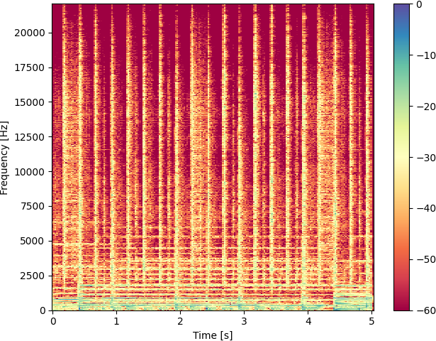

We target the challenging task of Ambisonic-to-Ambisonic reverberant sound source separation.
The aim is to estimate individual reverberant source signals, as if no other sound sources were present during the recording.
The problem overview is depicted in Figure 1.
We present the audio samples of input mixtures and source signals estimated with reference methods and one of the five proposed algorithms, namely the EU-WLP.
The reference methods include PWD, MWF, FastMNMF [2] and EU [3].
For more information about the reference methods, source signal retrieval procedure and the proposed solutions, kindly refer to our paper [1].
The presented audio samples include one audio file per one of the four datasets considered in our paper, namely the MUSIC I, MUSIC II, SPEECH and DSD100 [4].
In cases of the MUSIC I, MUSIC II and SPEECH datasets, we focus on the under-determined scenario, in which we retrieve source signals of 6 sound sources using first-order Ambisonics, that is derived from 4 directional signals.
Due to the limitations of the DSD100 dataset, in its case, we present samples for the determined scenario, where 4 source signals are retrieved.
More information on the aforementioned datasets can be found in our paper [1].
Table 1 presents the audio samples of input mixtures for the exemplary files, while Tables 2 - 5 present source signals separated with the reference methods and the proposed EU-WLP, in case of the MUSIC I, MUSIC II, SPEECH and DSD100 datasets, respectively.
All audio samples were decoded from the Ambisonic to the binaural format with the magLS method [5], using the spaudiopy library - please use headphones for best experience.
Note, that the estimated source signals were assigned to their target counterparts by considering the best overall Signal-to-Distortion-Ratio.
Combined with the reoccurring inability of the reference algorithms to properly separate source signals, this can produce somewhat unintuitive estimate-to-target mapping.
Table 1. Input mixtures for the exemplary audio files.
MUSIC I
MUSIC II
SPEECH
DSD100

Table 2. Separated source signals for the exemplary file from MUSIC I dataset.
[4] A. Liutkus and F. R. Stöter and Z. Rafii and D. Kitamura and B. Rivet and N. Ito and N. Ono and J. Fontecave, “The 2016 Signal Separation Evaluation Campaign”, The 2016 Signal Separation Evaluation Campaign (SiSEC16), 2017, doi.org/10.1007/978-3-319-53547-0_31.